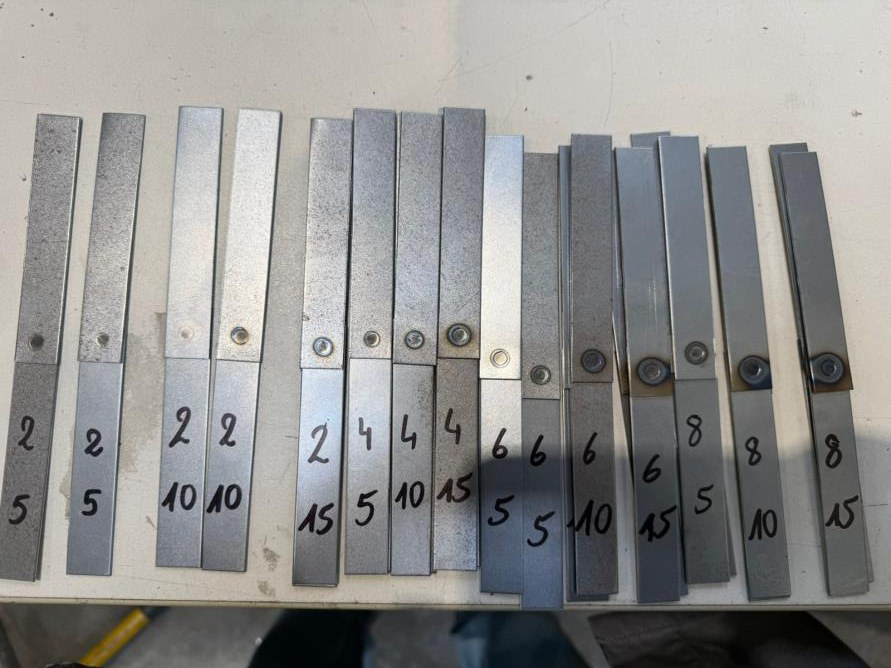
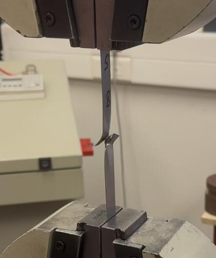
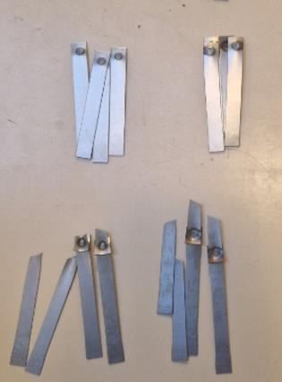
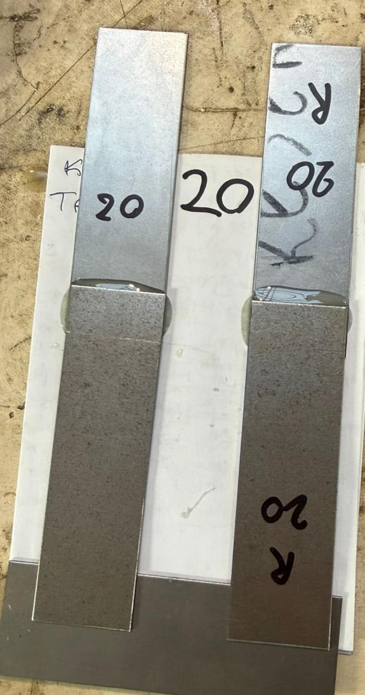
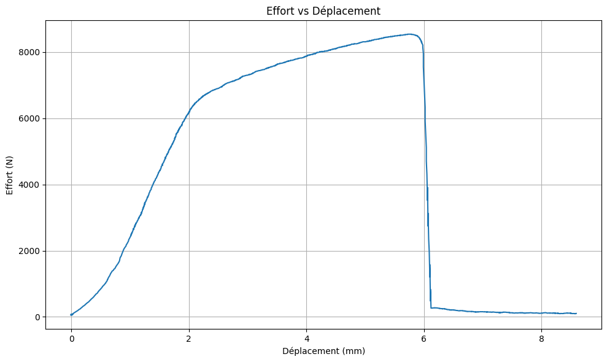

Soudage par points, rivetage et collage - Tenue des assemblages
Trois façons d’assembler une tôle d’acier DC01 de 1 mm, comparées sur la même machine de traction. Nous avons dimensionné chaque éprouvette à partir des règles de conception, fait varier les paramètres du procédé, rompu les assemblages et analysé où et pourquoi ils cédaient.

Ce que les essais ont montré
Figures tirées du rapport. Cliquez sur une image pour l’agrandir.


L’intensité compte bien plus que le temps de soudage
Nous avons soudé des éprouvettes à un point à 20, 40, 60 et 80 % des 14 kA de la machine, avec 5, 10 et 15 cycles. La résistance reste sous 200 MPa aux deux plus faibles intensités, atteint environ 270 MPa à 8 400 A et se stabilise autour de 320 MPa à 11 200 A.
À intensité maximale, le nombre de cycles ne change presque plus rien. C’est cohérent avec l’effet Joule, E = R·I²·t : l’énergie croît avec le carré de l’intensité, mais seulement linéairement avec le temps. Nous avons retenu 11 200 A et 5 cycles, soit le joint le plus résistant avec le moins de chaleur apportée à la pièce.
Résistance en fonction de l’intensité · du nombre de cycles


Trop de chaleur fragilise le voisinage du point
Nous avons découpé une soudure, poli la coupe jusqu’au poli miroir et révélé la microstructure au nital. Loin du point, les grains restent allongés par le laminage. En s’en approchant, ils recristallisent, puis grossissent nettement au bord du noyau.
Ce grossissement et la forte hétérogénéité de structure font de cette couronne la zone la plus faible. Cela explique pourquoi les soudures les plus longues et les plus chaudes ont rompu au bord du noyau plutôt que dans la tôle : plus d’énergie ne donne pas toujours un meilleur assemblage.
Micrographie de la zone soudée · notes de métallurgie du TP


La position du second point change le mode de rupture
Les éprouvettes à deux points ont été dimensionnées avec les règles de conception : distance au bord 2e + 4 mm, écartement de 20 mm (au moins 10e + 10 pour éviter le shuntage du courant par le premier point), soit un recouvrement de 42 × 17 mm.
Avec les deux points alignés avec l’effort, c’est la tôle qui a rompu et les soudures ont tenu. Côte à côte, l’assemblage a supporté un effort plus élevé, autour de 10 kN, mais ce sont les soudures qui se sont arrachées.
Deux points en série (rupture de la tôle) · deux points en parallèle (rupture de la soudure)


Supprimer le moment de flexion
Les assemblages rivetés ont été dimensionnés avec des rivets de 4 mm, un pas de 15 mm et une distance au bord de 7,5 mm. Dans un simple recouvrement, les deux tôles sont décalées : l’éprouvette tourne sous charge et les rivets cèdent en premier. Les rivets alignés avec l’effort ont mieux tenu que les rivets côte à côte.
Pour supprimer cette rotation, nous avons riveté trois tôles en sandwich, percées ensemble pour limiter le jeu. Les rivets ont alors tenu et la tôle a rompu la première, vers 4,6 kN.
Éprouvette rivetée en sandwich après essai · sa courbe effort-déplacement

Préparation de surface et température de polymérisation
Les assemblages collés utilisaient l’Araldite 2011, une colle époxy bi-composant. À partir d’une résistance au cisaillement de 25 MPa, la longueur de recouvrement nécessaire pour que la tôle casse avant le joint est de 14,8 mm. Les éprouvettes ont été dégraissées à l’acétone, certaines rayées pour augmenter la rugosité, puis polymérisées 10 h à température ambiante ou 45 min à 60 °C.
La polymérisation à 60 °C a doublé l’effort maximal, et le joint rayé et chauffé a été le plus résistant, vers 8,4 kN. Tous les joints ont rompu par pelage depuis les extrémités du recouvrement, à cause d’un léger désalignement dans les mors. Une éprouvette en sandwich a réduit cet effet, comme pour le rivetage.
Éprouvettes collées : 20 °C, 20 °C rayée, 60 °C, 60 °C rayée
Dimensionner, fabriquer, tester, comparer
Dimensionner
Application des règles de conception de chaque procédé : diamètre d’électrode et de point, distance au bord et écartement pour le soudage ; pas et distance au bord pour le rivetage ; longueur de recouvrement pour le collage.
Fabriquer
Soudage, rivetage et collage des éprouvettes en atelier, en changeant un paramètre à la fois : intensité et temps de soudage, disposition des points, préparation de surface et température de polymérisation.
Tester
Mesure de chaque éprouvette puis essai de traction jusqu’à rupture, avec enregistrement de l’effort en fonction du déplacement. Préparation d’une coupe métallographique de la meilleure soudure.
Comparer
Le soudage par points donne la meilleure résistance. Le rivetage et le collage s’en rapprochent une fois la géométrie améliorée : dans les éprouvettes en sandwich, l’assemblage n’est plus le point faible.
Cadre : équipe de quatre, TP de procédés d’assemblage (RESA), Arts et Métiers Lille. Rapport rédigé en français.
Au laboratoire
Photos et figures du rapport original. Cliquez pour agrandir.







